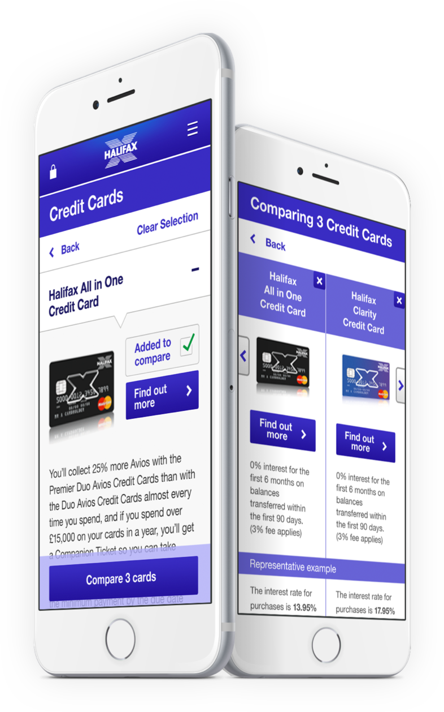

Halifax Mobile Product Comparison
Visual & Interaction Design

Lloyds recognised a need to optimise their mobile sales journey after doing an initial round of contextual research into their current app. They approached Foolproof and briefed us to design a best in class product comparison pattern that would be built into all the Lloyds and Halifax apps. During this project, I worked alongside an Interaction Designer and Research Consultant, taking the role of Visual Design lead.
I took the 3 chosen concepts and worked them up into high-fidelity visual designs which were then prototyped up for testing.
Once iterated upon, we handed over the final visuals to Lloyds who used them as a schematic for their latest implementations. Due to this project’s big success both in stakeholder satisfaction and design process, it was used by Foolproof as a model for how future projects should be tackled across the agency.
1. none selected
2. card selected (sticky bottom bar)
3. closed accordion (card selected)
4. comparing cards carousel
5. comparing cards empty state